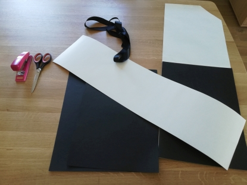

Successfully defended my PhD
Today I successfully defended my PhD entitled “3D mapping using active depth sensors” [link]. Due to the COVID-19 measures, I was obligated to do defense remotely, from home. Fortunately, technology didn’t let me down and everything went fine. I can call myself a doctor in computer science engineering from now on. Thanks to everyone who helped me during the past 6 years!


I also owe a special word of thanks to my girlfriend, who surprised me with a self-assembled PhD hat, for which I am very grateful!
